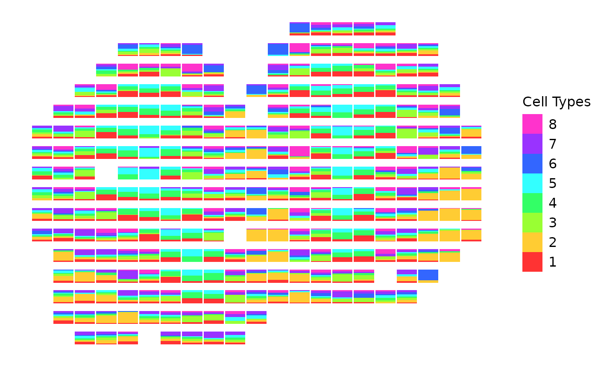
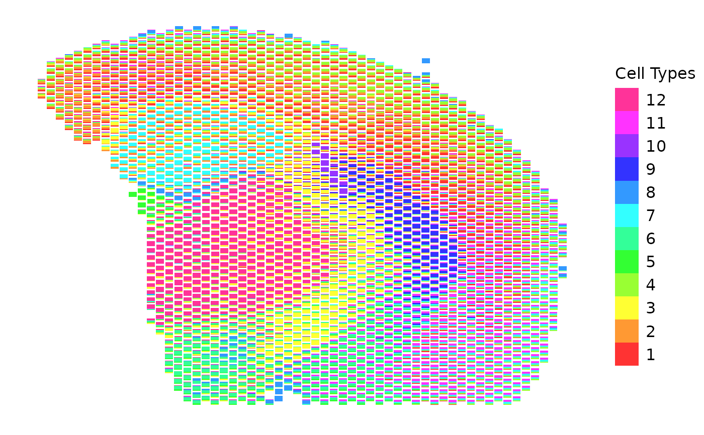

This function creates a scatterbar plot using ggplot2, where the bars are stacked based on the different proportions of groups in each 2-D location/spot. A scatterbar plot is a combination of a scatter plot and a stacked bar chart, allowing for the visualization of proportional data across spatial coordinates. The function allows for customized scaling factors and padding when creating the plot. If no scaling factors are specified, the function automatically determines the optimal scaling factors based on the data.
Usage
scatterbar(
data,
xy,
size_x = NULL,
size_y = NULL,
padding_x = 0,
padding_y = 0,
show_legend = TRUE,
legend_title = "Group",
colors = NULL,
verbose = TRUE
)Arguments
- data
A data frame containing the proportions of different categories for each location. Each row represents a location, and each column (except the row names) represents a category.
- xy
A data frame containing the positional information for each location. This data frame includes the x and y coordinates for each location/spot (the respective row names).
- size_x
X-axis scaling factor (default is NULL). If not provided, it will be automatically calculated based on the data.
- size_y
Y-axis scaling factor (default is NULL). If not provided, it will be automatically calculated based on the data.
- padding_x
Padding for x-axis (default is 0).
- padding_y
Padding for y-axis (default is 0).
- show_legend
Boolean indicating whether to display the plot legend (default is TRUE).
- legend_title
Custom title for the legend (default is "Group").
- colors
Optional vector of colors to use for each category (default is NULL). If not provided, a default palette will be used.
- verbose
Boolean indicating whether to print the calculated scaling and padding values (default is TRUE).
Examples
data(mOB)
scatterbar(mOB$data, mOB$xy, padding_x = 0.3, padding_y = 0.3, legend_title = "Cell Types")
#> Calculated size_x: 0.940347345892085
#> Calculated size_y: 0.630260509419063
#> Applied padding_x: 0.3
#> Applied padding_y: 0.3

data(adult_mouse_brain_ffpe)
scatterbar(
adult_mouse_brain_ffpe$prop,
adult_mouse_brain_ffpe$pos,
size_x = 220,
size_y = 220,
legend_title = "Cell Types")
#> Calculated size_x: 220
#> Calculated size_y: 220
#> Applied padding_x: 0
#> Applied padding_y: 0
